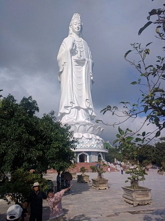
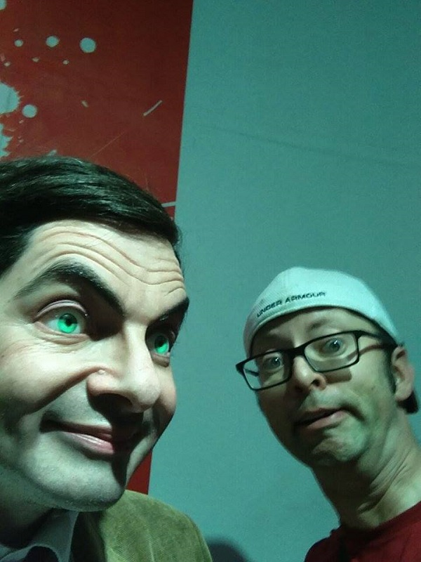

This was my third trip to Vietnam! I came back to visit many friends and visit new places and eat new foods!

Lady Buddha at Linh Ung Pagoda Đà Nẵng
Near Đà Nẵng is Ba Na Hills, a place that holds French Architecture and a Wax Museum! I got to meet waxy Mr. Bean! Maybe there are two Mr. Beans in this next pic? What a goof!
This trip I became more comfortable traveling on my own and adjusting to the motorbike transportation lifestyle!
Hai Van Pass is a great motorbike trip!